按真实规格建模 · 实际页面截图 · 等待你的视觉确认
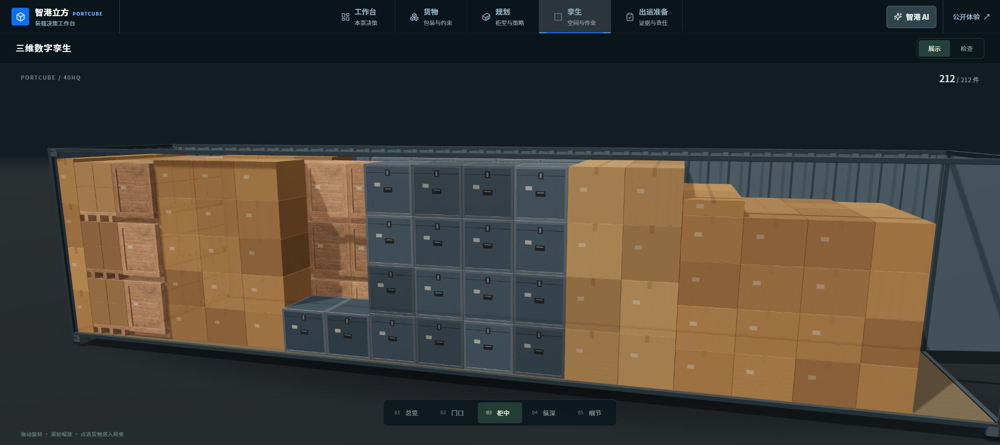
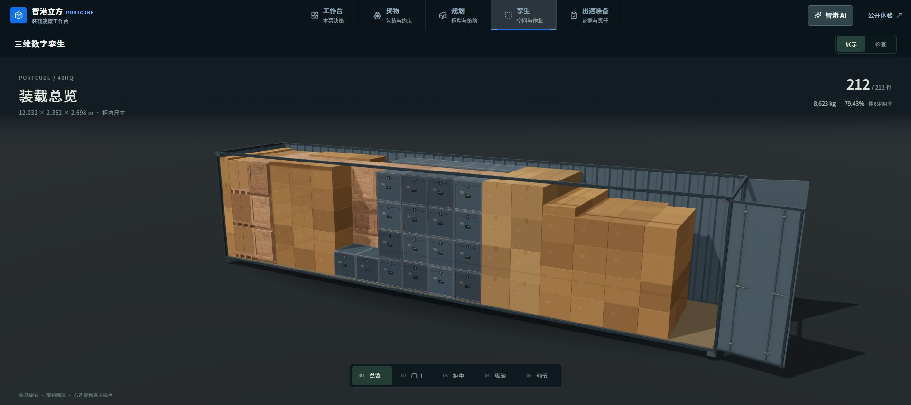
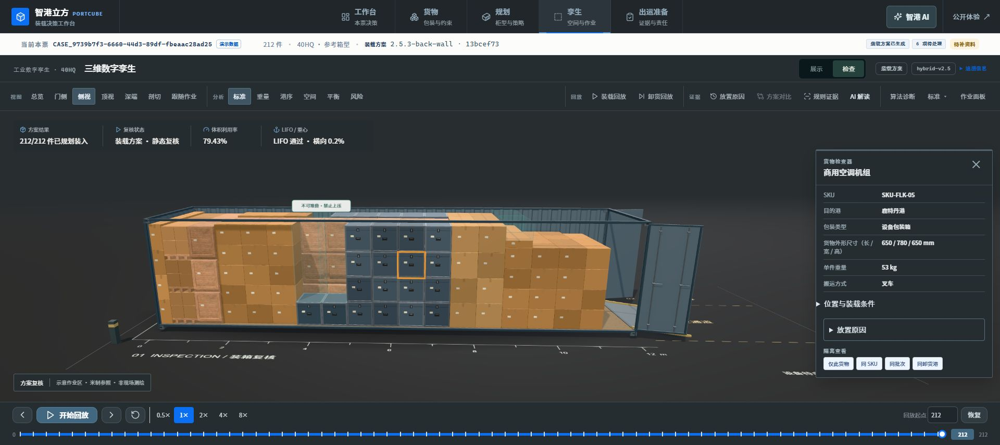
各对照使用相同规格、相机、标尺和查看器光照。左：被拒绝的 quality-v1。右：本轮 Blender 重建。
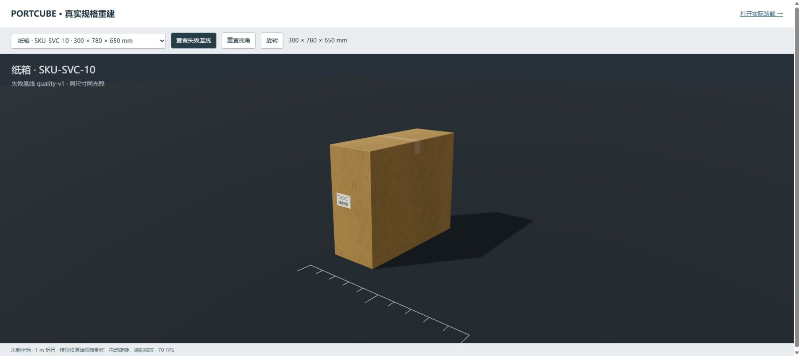
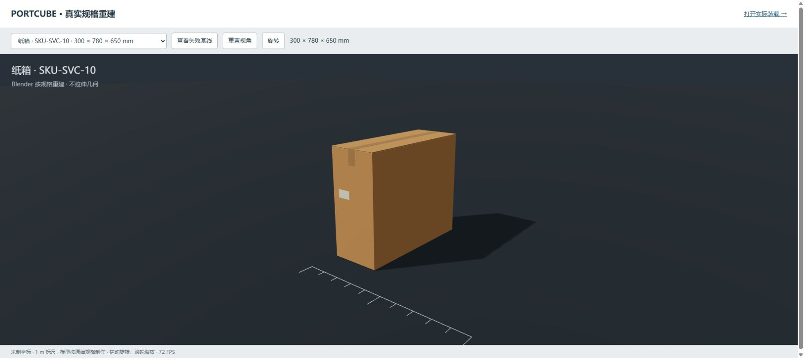
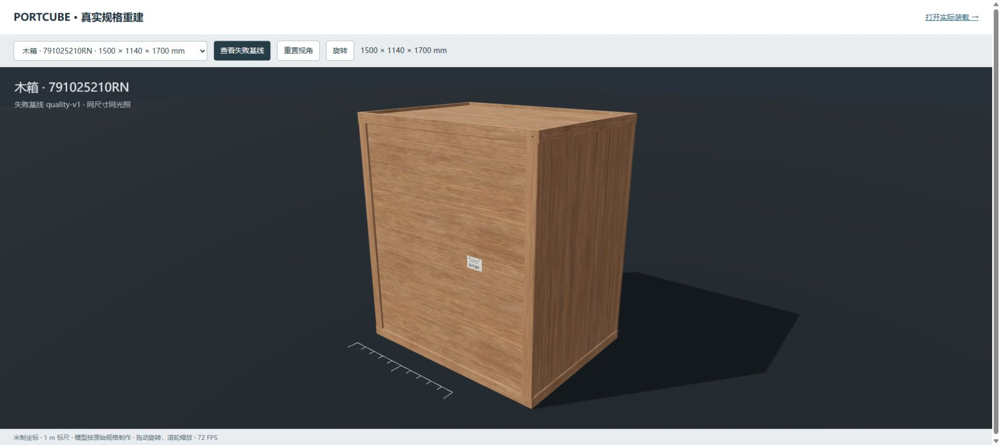
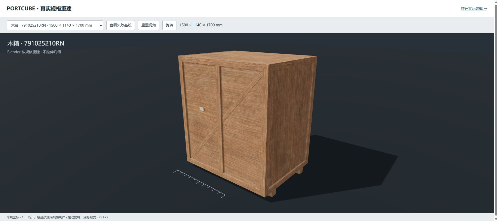
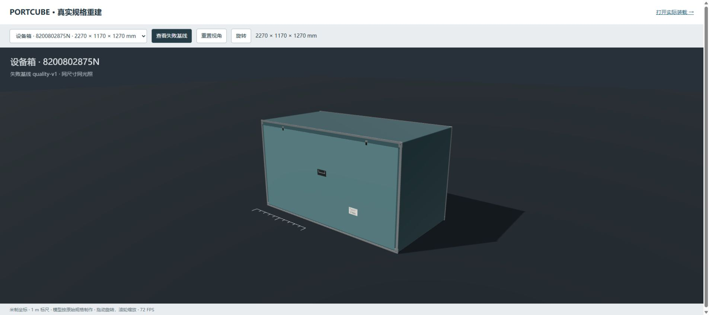
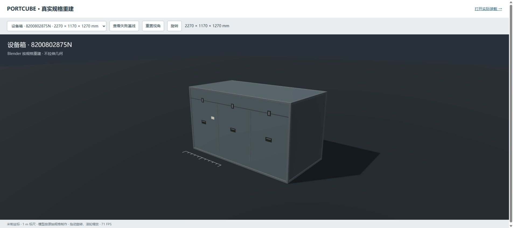
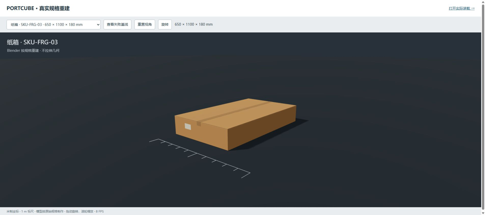
相同 212 件、相同坐标、相同光照配置及总览镜头；资产、抗锯齿和逐件明度随版本切换。
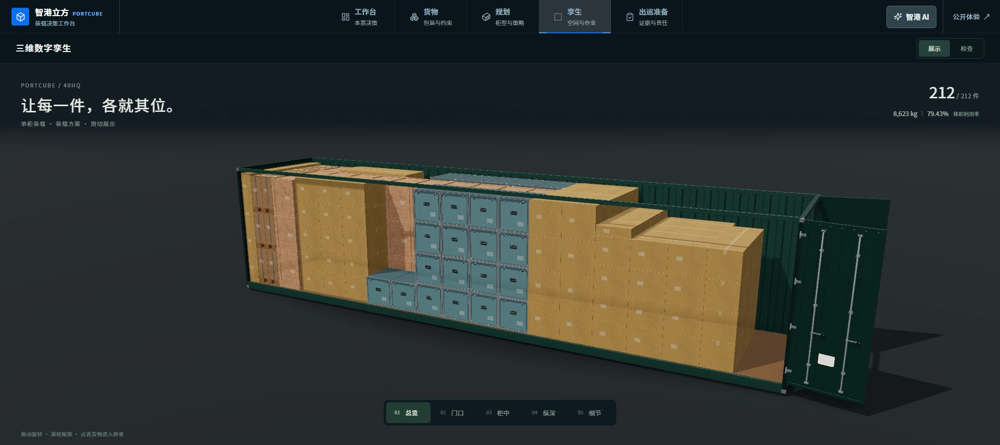
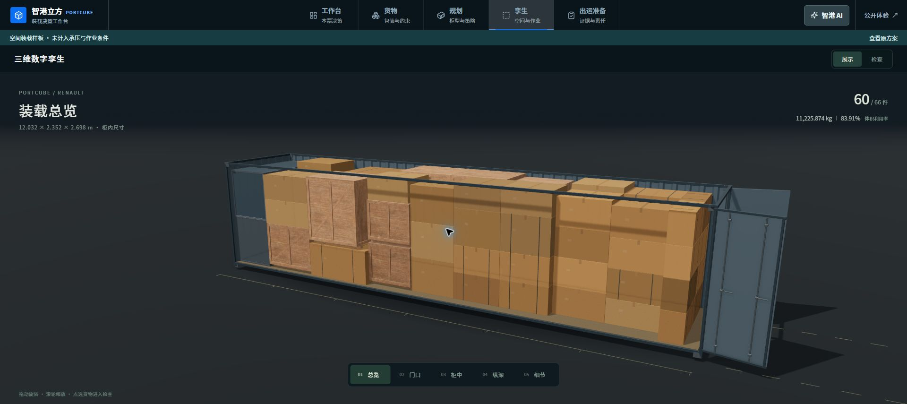
来源未给包装材质，使用中性外形；不是包装美术样板。
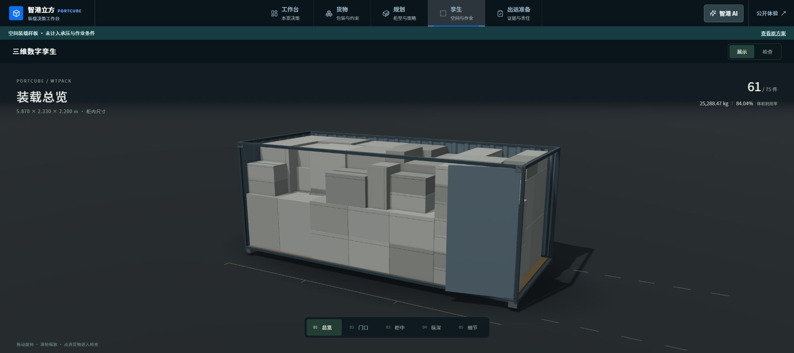
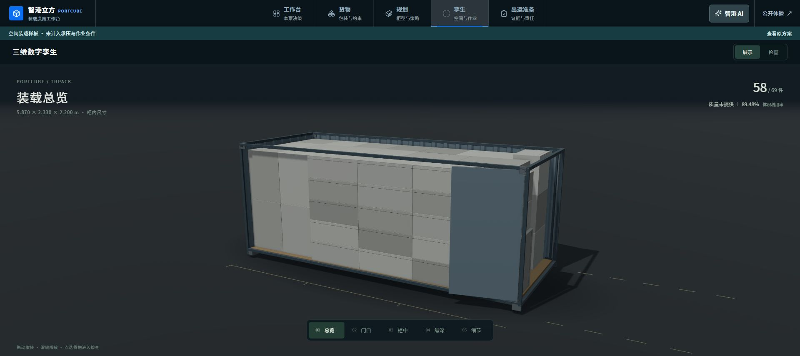
保留尺寸、数量、方向和支撑。暂未计入承压与作业条件；仍非 100% 满柜，也没有全局最优证明。